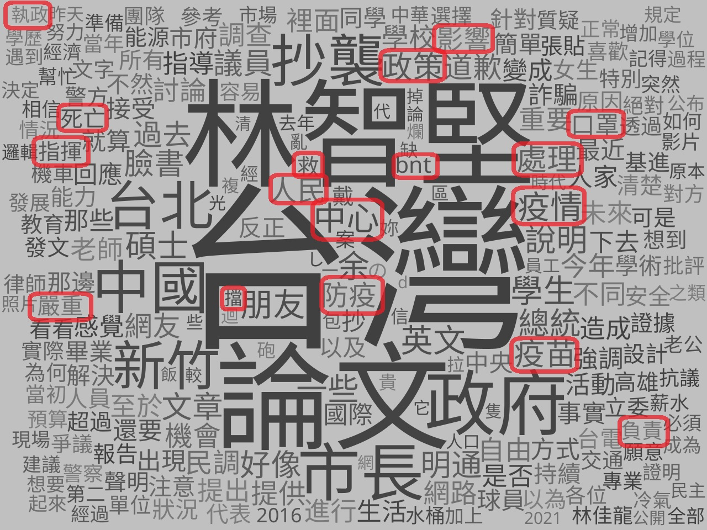
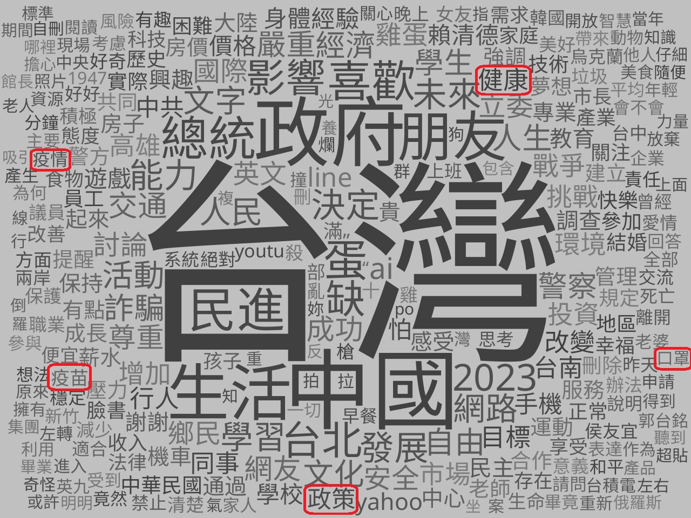

輿情分析
由於資料分析結果顯示在 2022 年疫情嚴峻之際，使用者的正、負向情緒並沒有顯著差異，並且紀雪梅（2018）提出除了關心研究的主要話題，對於子話題的分析也能幫助更了解民眾的認知與想法，所以進一步針對這 1342 位使用者貼文進行輿論分析，以了解民眾在討論疫情之際是否有更有感或熱衷討論的事物，結果如下圖。
2022 年主題討論文字雲圖
- 新冠疫情是使用者在 2022 年主要討論的議題之一，但是另一個更為熱議的議題是新竹市前市長「林智堅先生的論文案」。
2023 年主題討論文字雲圖
- 使用者在 2023年對於疫情的討論度降低了許多，民眾在這個時期討論的議題多元，範圍包括生活、政府、民生、工作、經濟……等各種不同的社會層面。